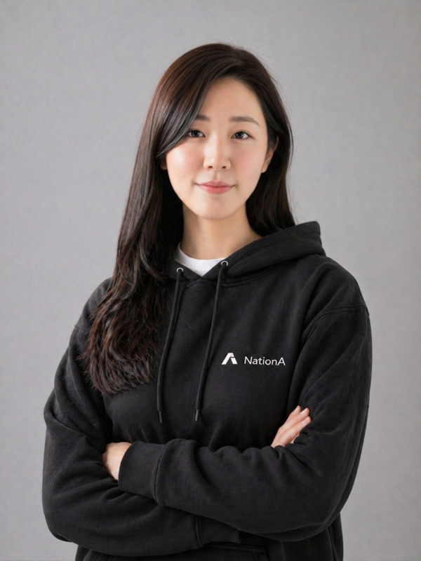

발표 소개
생성형 AI로 누구나 영상을 만들 수 있는 시대, 사용자가 기꺼이 비용을 지불하는 서비스는 어떻게 만들어질까요? 네이션에이가 AI 콘텐츠 제품을 개발·운영하며 발견한 기회와, 월정액 무제한 AI 영상 생성 서비스 ‘러다이트(Ludyte)’를 만들기까지의 과정을 소개합니다.
반복 생성에 따른 비용 부담을 낮추기 위해 선택한 오픈웨이트 모델과 자체 GPU 운영, 창작자의 제작 경험, 구독 모델을 어떻게 하나의 사업으로 연결했는지 살펴봅니다. 그 과정에서 마주한 선택과 고민을 통해 AI 콘텐츠 시장의 사업 기회를 이야기합니다.
- 네이션에이
- 러다이트
- AI영상생성
- 월정액무제한
- AI비즈니스
- AI에이전트
연사 소개

유수연
카카오일상AI 포럼 위원, 네이션에이 대표
유수연은 AI 콘텐츠 기업 네이션에이(NationA)의 대표다. 삼성SDS에서 약 10년간 엔지니어 및 사내벤처 리더로 활동한 경험을 바탕으로 창업했다. 지난 3년간 AI 콘텐츠 제작 서비스와 플레이어블 드라마 플랫폼을 개발하고 글로벌 시장에서 운영한 경험을 바탕으로, 현재 월정액 무제한 AI 영상 생성 서비스 ‘러다이트(Ludyte)’를 선보이며 AI 기술을 사용자 경험과 비즈니스로 연결하는 데 집중하고 있다.